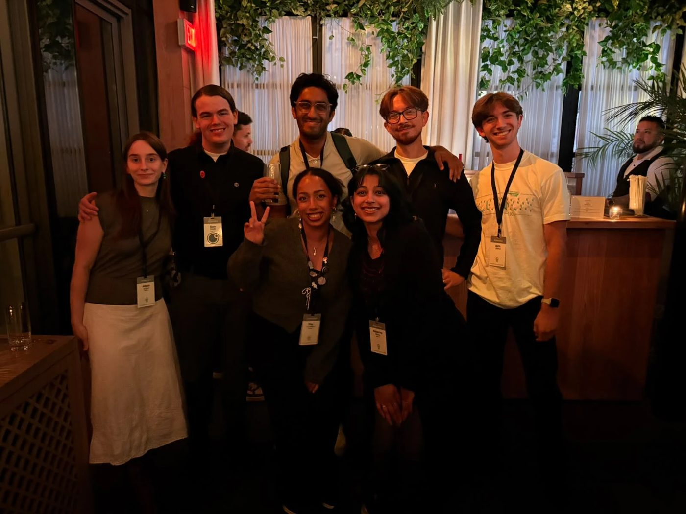

We help experienced professionals move into the AI safety roles where they'll matter most. We route people to impactful roles, help organisations hire well, and coordinate and build talent infrastructure.
For experienced people moving into AI safety, or already in it and looking for a better fit.
A 30-minute call about your experience and what you want next.
Where we think you'd fit, including roles that aren't advertised.
We refer you where we think you'd fit best.
For organisations hiring experienced people from outside the field.
Send us a role, including closed rounds, and we'll suggest people.
Help reading CVs from consulting, law or government.
Research on how other fields hire senior people.
For people partway through a move, and the organisations supporting them.
We help out with Lateral and GenStream, and fund new projects.
Like our evening at EAG New York.
We swap hard-to-fill roles with SteadRise, Successif and others.
Since July we've had conversations with over 220 people, including more than 110 experienced professionals considering a move into AI safety. We've made over 250 referrals and tracked more than 600 roles.
People we've worked with have gone on to roles at BlueDot Impact, Coefficient Giving, Anthropic and Constellation.

On paths that aren't clearly mapped, travellers leave cairns to help each other find the way.
Cairn is led by Sam Smith, who started this work at the Generator Residency in 2026 to help experienced professionals navigate a pivot into AI safety.
Tell us a bit about your background and what you're looking for. We read every form, but can't speak to everyone.
Fill in the short formTell us about the role, whether or not it's advertised. A short note is plenty.
Tell us about a roleAnything else: info@aisrouting.org